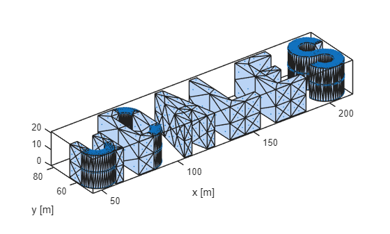
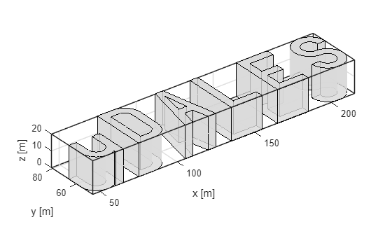
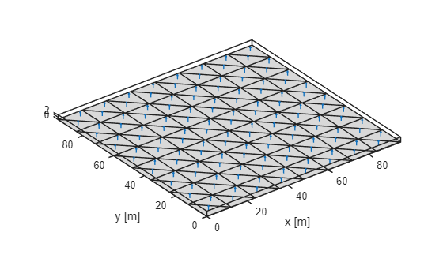
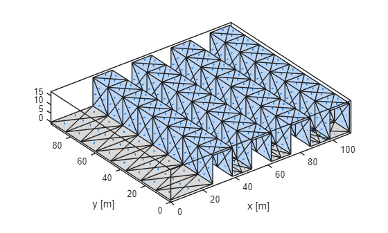

uDALES urban surface creation¶
uDALES supports several manners to create urban surfaces. It is possible to run uDALES without specifying an urban surface, in which case a flat terrain is assumed. In most cases however, an urban surface will be specified. uDALES contains a number of functions in the udgeom package that aid geometry generation:
- udgeom.createFlatSurface. This function creates a flat surface. The main reason for using this function is to be able to discretise the surface in as many facets as possible in case heterogeneous boundary conditions are required.
- udgeom.createCanyons. This function creates one-dimensional street canyons.
- udgeom.createCubes. This function creates cubes, either a single one or an array of cubes.
- udgeom.createRealistic. This function creates a realistic urban surface based on an stl file that contains the buildings. The function adds the ground surface.
The live matlab file of this tutorial can be found in the repository in the folder /docs/tutorial_mlx.
Initialising udbase¶
Note that the uDALES/tools/matlab path must be added via the Set Path button in order to use the udgeom package. Alternatively, it can be added using the addpath function inside the script (done here).
% preamble
clear variables
close all
% add the uDALES matlab path
addpath('path_to_udales\tools\matlab')
The udgeom class¶
The udgeom class contains the uDALES urban surface. It is the output of the geomety creation routines mentioned above. The class can load STL files, display the geometry and save to STL files as shown below.
help udgeom.udgeom
udgeom Geometry class for uDALES
The udgeom class contains the triangulated surface.
Documentation for udgeom.udgeom
geom = udgeom.udgeom(); % create udgeom instance.
methods(geom); % show the methods the class contains
Methods for class udgeom.udgeom:
calculate_outline2d chcpath get_building_outlines get_buildings get_face_to_building_map get_outline gohome gopath load save show show_outline udgeom
Methods of udgeom.udgeom inherited from handle.
These methods can be used as follows
help geom.load
--- help for udgeom.udgeom/load ---
load an STL file.
example:
obj.load(obj, filename)
help geom.save
--- help for udgeom.udgeom/save ---
save an STL file.
example:
obj.save(obj, filename)
help geom.show
--- help for udgeom.udgeom/show ---
plot the geometry
show(obj, colorbuildings)
colorbuildings (optional): boolean parameter on whether
to colour buildings. This
parameter is true by default.
Needs to be set to false for
large geometries.
examples:
obj.show();
obj.show(false);
Here is a simple example on how to use this class:
geom.load('uDALES.stl') % load an STL file from the current directory (can be changed in constructor)
geom.show(); % show the geometry
xlabel('x [m]');
ylabel('y [m]')

Another way is to show the outline.
help geom.show_outline
--- help for udgeom.udgeom/show_outline ---
Plot the geometry outline edges
show_outline(obj) plots the precomputed outline edges of the geometry
show_outline(obj, angle_threshold) recalculates outline with custom threshold
Parameters:
angle_threshold (optional): Angle threshold in degrees for edge detection
If not provided, uses precomputed outline
Examples:
obj.show_outline(); % Use precomputed outline
obj.show_outline(30); % Recalculate with 30┬░ threshold
Here is a simple example on how to use this method:
geom.show_outline(); % show the geometry outline
xlabel('x [m]');
ylabel('y [m]')

udgeom.createFlatSurface¶
This function creates flat surfaces
help udgeom.createFlatSurface
createFlatSurface creates flat surface consisting of triangular facets
geom = createFlatSurface(xsize, ysize, edgelength) returns a geom
instance that can be saved to an stl file.
xsize: length of the domain in x-direction
ysize: length of the domain in y-direction
edgelength: the length of individual facets. Best taken as xsize
(or ysize) divided by an integer number.
See below for an example how to use this function.
% domain size
xsize = 96; % [m]
ysize = xsize; % [m]
edgelength = xsize/8; % [m]
geom = udgeom.createFlatSurface(xsize, ysize, edgelength);
geom.show;
xlabel('x [m]');
ylabel('y [m]')

udgeom.createCanyons¶
This function creates one-dimensional street canyons
help udgeom.createCanyons
createCanyons creates one-dimensional street canyons
geom = createCanyons(xsize, ysize, B, W, H, shift, edgelength) returns
a geom instance that can be saved to an stl file.
xsize: length of the domain in x-direction
ysize: length of the domain in y-direction
B: building width
W: street width
H: building height
shift: shifts the canyons to the right in the x-direction
edgelength: the length of individual facets. Best taken as xsize
(or ysize) divided by an integer number.
rotate90: boolean that allows one to rotate the domain once it
has been generated. Set this parameter to false under
normal conditions.
See below for an example how to use this function.
% domain size
xsize = 96; % domain size in x-direction
ysize = 96; % domain size in y-direction
% canyon properties
B = 12; % building width
H = 16; % building height
W = 12; % street width
shift = 20; % make the canyons start a distance from the west-boundary of the domain.
% Note this makes the domain larger in the x-direction.
edgelength = 6; % facet size
rotate90 = false; % default value
geom = udgeom.createCanyons(xsize, ysize, B, W, H, shift, edgelength, rotate90);
geom.show;
xlabel('x [m]');
ylabel('y [m]')

udgeom.createCubes¶
This function creates cubes, either a single one or an array of cubes.
help udgeom.createCubes
createCubes creates cubes, either a single one or an array of cubes.
geom = createCubes(xsize, ysize, Hx, Hy, Hz, Cx, Cy, geom_option, edgelength)
returns a geom instance that can be saved to an stl file.
xsize: length of the domain in x-direction
ysize: length of the domain in y-direction
Hx: cube x-length
Hy: cube y-length
Hz: cube height
Cx: cube spacing in x-direction
Cy: cube spacing in y-direction
geom_option: the type of geometry to create:
'S': single cube
'AC': aligned cubes
'SC': staggered cubes
edgelength: the length of individual facets. Best taken as xsize
(or ysize) divided by an integer number.
See below for an example how to use this function.
% domain size
xsize = 96;
ysize = 96;
% cube length in each direction
Hx = 16;
Hy = 16;
Hz = 16;
% canyon length in each direction
Cx = 8;
Cy = 8;
% geometry type
% S: single cube
% AC: aligned cubes
% SC: staggered cubes
geom_type = 'SC';
edgelength = 8;
geom = udgeom.createCubes(xsize, ysize, Hx, Hy, Hz, Cx, Cy, geom_type, edgelength);
geom.show;
xlabel('x [m]');
ylabel('y [m]')
udgeom.createRealistic¶
This function creates a realistic urban surface based on an stl file that contains the buildings. The function adds the ground surface.
help udgeom.createRealistic
createRealistic creates a realistic urban surface based on an stl file
that contains the buildings. The function adds the
ground surface.
geom = createRealistic(stlfile, xsize, ysize, shift, edgelength)
returns a geom instance that can be saved to an stl file.
stlfile: the STL file that contains the buildings (NOT the
ground)
xsize: length of the new domain in x-direction
ysize: length of the new domain in y-direction
shift: array that shifts the geometry. shift[1], shift[2] and
shift[3] represent, respectively, the shift in x-, y-
and z-direction.
edgelength: the length of individual facets. Best taken as xsize
(or ysize) divided by an integer number.
See below for an example how to use this function.
% stl file containing buildings only
stlfile = 'uDALES.stl';
% original domain size
xsize_og = 256;
ysize_og = 128;
% example translation to make domain larger in x direction
shift = [20 0 0];
% ground facet size
edgelength = 16;
geom = udgeom.createRealistic(stlfile, xsize_og, ysize_og, shift, edgelength);
geom.show;
xlabel('x [m]');
ylabel('y [m]')